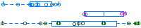

| ID | Image | logFC | p-Value | Adjusted p-Value |
|---|---|---|---|---|
| ID | Image | logFC | p-Value | Adjusted p-Value |
| RPL11 | 0.798 | 1.21e-13 | 1.85e-09 | |
| HLA-DQA2 | 3.320 | 9.90e-12 | 7.56e-08 | |
| FCER1A | -1.770 | 3.45e-10 | 1.76e-06 | |
| TMEM176A | 2.150 | 5.16e-09 | 1.97e-05 | |
| ABO | 2.180 | 9.92e-09 | 3.03e-05 | |
| OSBP2 | -1.060 | 2.97e-08 | 7.57e-05 | |
| MS4A2 | -1.880 | 1.62e-07 | 3.54e-04 | |
| LOXHD1 | -1.080 | 2.33e-07 | 4.44e-04 | |
| EPHB3 | 2.750 | 2.91e-07 | 4.50e-04 | |
| ZNF860 | 1.360 | 2.95e-07 | 4.50e-04 | |
| AKAP12 | -1.590 | 3.57e-07 | 4.95e-04 | |
| PPP1R14A | 1.540 | 4.73e-07 | 6.02e-04 | |
| CD177 | -3.560 | 6.75e-07 | 7.92e-04 | |
| PAWR | 1.020 | 2.59e-06 | 2.83e-03 | |
| BHLHA15 | 2.190 | 4.11e-06 | 4.19e-03 | |
| BANK1 | 0.985 | 5.32e-06 | 5.08e-03 | |
| CD79B | 1.280 | 7.29e-06 | 6.38e-03 | |
| FCER2 | 0.923 | 7.52e-06 | 6.38e-03 | |
| IFNLR1 | 1.410 | 9.62e-06 | 7.68e-03 | |
| BCL7A | 1.360 | 1.05e-05 | 7.68e-03 | |
| OSBPL10 | 1.200 | 1.06e-05 | 7.68e-03 | |
| RNF182 | 2.960 | 1.14e-05 | 7.94e-03 | |
| GATA2 | -1.450 | 1.29e-05 | 8.54e-03 | |
| AOC1 | 2.670 | 1.54e-05 | 9.59e-03 | |
| TMEM158 | -1.290 | 1.59e-05 | 9.59e-03 | |
| CDK11A | -0.614 | 1.63e-05 | 9.59e-03 | |
| TMEM176B | 1.710 | 1.70e-05 | 9.61e-03 | |
| GIPC3 | 1.140 | 2.16e-05 | 1.17e-02 | |
| CPNE5 | 1.290 | 2.23e-05 | 1.17e-02 | |
| FCRL5 |  | 1.360 | 2.43e-05 | 1.24e-02 |
| MS4A1 | 1.010 | 2.51e-05 | 1.24e-02 | |
| INF2 | 0.542 | 2.73e-05 | 1.30e-02 | |
| DENND5B | 1.290 | 3.17e-05 | 1.46e-02 | |
| GPRC5B | 2.450 | 3.43e-05 | 1.54e-02 | |
| CPA3 | -2.250 | 4.05e-05 | 1.77e-02 | |
| HERPUD2 | -0.285 | 4.58e-05 | 1.94e-02 | |
| KNOP1 | 0.475 | 5.40e-05 | 2.23e-02 | |
| SYNPO | 1.360 | 6.28e-05 | 2.52e-02 | |
| KLHL14 | 2.030 | 6.58e-05 | 2.58e-02 | |
| TXNDC5 | 2.460 | 7.05e-05 | 2.69e-02 | |
| IGFBP3 | -1.700 | 7.82e-05 | 2.83e-02 | |
| CPEB3 | -0.451 | 7.92e-05 | 2.83e-02 | |
| RELCH | -0.244 | 8.00e-05 | 2.83e-02 | |
| RNF17 | 3.850 | 8.16e-05 | 2.83e-02 | |
| BLK | 1.060 | 9.00e-05 | 3.05e-02 | |
| PARM1 | 1.220 | 1.01e-04 | 3.26e-02 | |
| PAX5 | 1.180 | 1.02e-04 | 3.26e-02 | |
| BIRC3 | 0.339 | 1.03e-04 | 3.26e-02 | |
| FCMR | 0.711 | 1.06e-04 | 3.26e-02 | |
| ZNF215 | 3.010 | 1.09e-04 | 3.26e-02 | |
| TNFRSF13C | 1.310 | 1.13e-04 | 3.26e-02 | |
| MAGEF1 | 0.836 | 1.14e-04 | 3.26e-02 | |
| MAK | -0.698 | 1.15e-04 | 3.26e-02 | |
| RAPGEF5 | 1.670 | 1.16e-04 | 3.26e-02 | |
| IGKV2D-28 | 2.510 | 1.20e-04 | 3.26e-02 | |
| EBF1 | 1.090 | 1.21e-04 | 3.26e-02 | |
| MYO3A | 3.600 | 1.22e-04 | 3.26e-02 | |
| TFAP4 | 0.560 | 1.26e-04 | 3.32e-02 | |
| SIGLEC1 | 2.000 | 1.32e-04 | 3.40e-02 | |
| PDGFRB | -1.560 | 1.35e-04 | 3.45e-02 | |
| MTM1 | -0.341 | 1.47e-04 | 3.68e-02 | |
| CORO2B | 1.680 | 1.51e-04 | 3.72e-02 | |
| P2RX5 | 1.080 | 1.54e-04 | 3.74e-02 | |
| SCFD2 | 0.413 | 1.61e-04 | 3.81e-02 | |
| COLCA2 | 2.630 | 1.62e-04 | 3.81e-02 | |
| SOX5 | 1.300 | 1.70e-04 | 3.84e-02 | |
| TOMM7 | 0.458 | 1.72e-04 | 3.84e-02 | |
| DACT1 | 1.140 | 1.75e-04 | 3.84e-02 | |
| C16orf91 | -0.921 | 1.75e-04 | 3.84e-02 | |
| TOR1B | 0.582 | 1.76e-04 | 3.84e-02 | |
| DNAH6 | 1.050 | 1.85e-04 | 3.95e-02 | |
| PAG1 |  | -0.285 | 1.86e-04 | 3.95e-02 |
| FCRL1 | 0.969 | 1.92e-04 | 4.01e-02 | |
| TRPC1 | -1.060 | 2.08e-04 | 4.28e-02 | |
| SDC1 | 4.650 | 2.14e-04 | 4.28e-02 | |
| HIST1H3H | -0.832 | 2.17e-04 | 4.28e-02 | |
| MCC | -0.511 | 2.18e-04 | 4.28e-02 | |
| IGHV3-72 | 3.650 | 2.19e-04 | 4.28e-02 | |
| SLC45A3 | -1.210 | 2.26e-04 | 4.36e-02 | |
| PAX8 | 1.530 | 2.35e-04 | 4.36e-02 | |
| CRIM1 | -0.351 | 2.36e-04 | 4.36e-02 | |
| IER5L | -1.140 | 2.36e-04 | 4.36e-02 | |
| BTNL9 | 2.040 | 2.37e-04 | 4.36e-02 | |
| CD180 | 0.742 | 2.42e-04 | 4.36e-02 | |
| FCRL2 | 1.100 | 2.43e-04 | 4.36e-02 | |
| MZB1 | 2.280 | 2.49e-04 | 4.39e-02 | |
| UTP14A | 0.490 | 2.50e-04 | 4.39e-02 | |
| RASGEF1B | 0.666 | 2.58e-04 | 4.47e-02 | |
| MRPS18A | 0.462 | 2.60e-04 | 4.47e-02 | |
| ENSG00000285976 | -0.926 | 2.74e-04 | 4.66e-02 |